<!DOCTYPE html>
<html lang="en">
<head>
<meta charset="UTF-8">
<meta name="viewport" content="width=device-width,initial-scale=1">
<title>Answers — Appendix</title>
<meta name="description" content="Class 7 Mathematics · Term 3 · Appendix · Answers">
<link rel="icon" href="data:image/svg+xml,<svg xmlns='http://www.w3.org/2000/svg' viewBox='0 0 100 100'><text y='.9em' font-size='90'>📘</text></svg>">
<link rel="stylesheet" href="../../../assets/book.css">
<link rel="stylesheet" href="https://cdn.jsdelivr.net/npm/katex@0.16.11/dist/katex.min.css" crossorigin="anonymous">
</head>
<body>
<header class="topbar">
<div class="topbar-in">
  <div class="crumb">
    <span class="c1"><a href="../../../index.html">Library</a> · <a href="../../index.html">Class 7 Mathematics · Term 3</a></span>
    <span class="c2">Appendix · Answers</span>
  </div>
  <a class="tb-btn" data-nav="prev" href="../../06-information-processing/03-exercise-6.1/index.html" title="Exercise 6.1">←</a>
  <details class="drawer"><summary class="tb-btn" title="Sections in this chapter">☰</summary>
<div class="drawer-panel"><div class="dh">Appendix</div><a href="../answers/index.html" aria-current="page">Answers</a></div></details>
  <span class="tb-btn" aria-disabled="true">→</span>
  <button class="tb-btn" data-theme-toggle title="Toggle light / dark" aria-label="Toggle light or dark theme">◐</button>
</div>
<div class="progress"><span style="width:100.0%"></span></div>
</header>
<main class="wrap">
<div class="sec-head">
  <p class="eyebrow"><a href="../index.html">Appendix · Appendix</a></p>
  <h1>Answers</h1>
  <p class="sec-meta">19 figures</p>
</div>
<article class="prose">
<figure class="fig wide">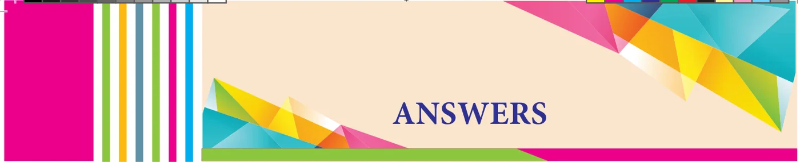</figure>
<ul class="qlist">
<li><span class="mk">1.</span><span class="lt">Number system</span></li>
</ul>
<h4 class="callout-h" id="s-exercise-1-1">Exercise 1.1</h4>
<ul class="qlist">
<li><span class="mk">1.</span><span class="lt">(i) 9 (ii) 26 (iii) 69 (iv) 104</span></li>
<li><span class="mk">(v)</span><span class="lt">50 (vi) 101 (vii) 40 (viii) 1</span></li>
<li><span class="mk">2.</span><span class="lt">(i) 6.0 (ii) 21.81 (iii) 35.001</span></li>
<li><span class="mk">3.</span><span class="lt">(i) 123.4 (ii) 20.0 (iii) 910.6</span></li>
<li><span class="mk">4.</span><span class="lt">(i) 87.76 (ii) 301.51 (iii) 80.00</span></li>
<li><span class="mk">5.</span><span class="lt">(i) 24.400 (ii)1251.235 (iii) 61.002</span></li>
</ul>
<h4 class="callout-h" id="s-exercise-1-2">Exercise 1.2</h4>
<p>1.</p>
<figure class="fig">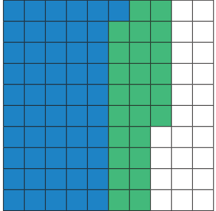</figure>
<p>Ans 0.76</p>
<p>2.</p>
<figure class="fig wide">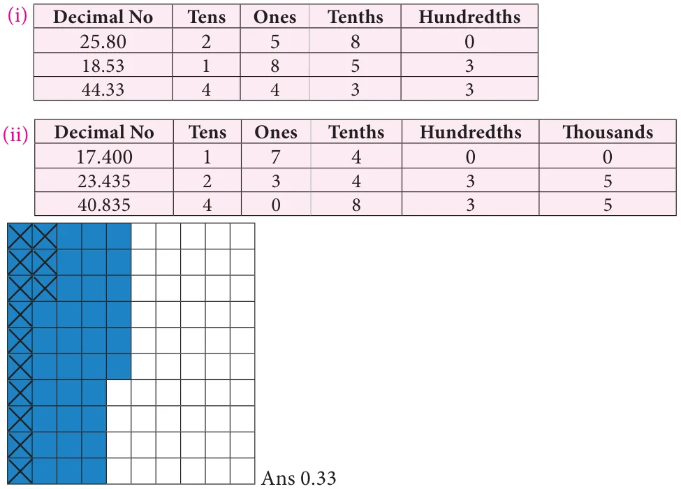</figure>
<p>3.</p>
<figure class="fig"></figure>
<p>4.</p>
<figure class="fig wide">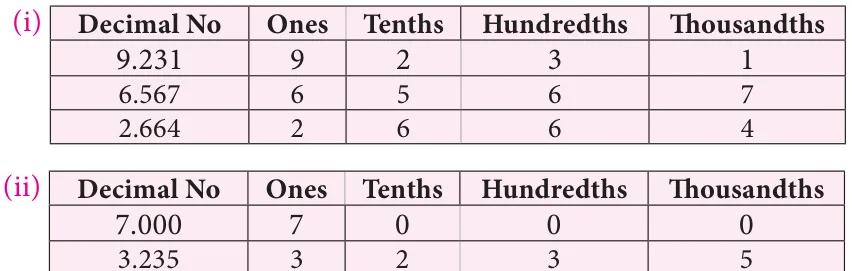</figure>
<ul class="qlist">
<li><span class="mk">5.</span><span class="lt">14.01 6. \(4.650 \frac{3}{kg7.} 6.387 8\). 18.1 9. \(\frac{5}{₹ 2.6010.} 11.4\) cm</span></li>
</ul>
<p>Objective type questions</p>
<ul class="qlist">
<li><span class="mk">11.</span><span class="lt">(iii) 1.83 12. (ii) 4.17 13. (iv) 2.16 14. (i) 1.57 15. (i) 128.89</span></li>
</ul>
<h4 class="callout-h" id="s-exercise-1-3">Exercise 1.3</h4>
<ul class="qlist">
<li><span class="mk">1.</span><span class="lt">(i) 1.5 (ii) 22.50 (iii) 200.8</span></li>
<li><span class="mk">(iv)</span><span class="lt">0.27 (v)3171.21 (vi) 2.8</span></li>
<li><span class="mk">2.</span><span class="lt">23.80 sq.cm 3. 360.24 sq.cm</span></li>
<li><span class="mk">4.</span><span class="lt">(i) 25.7 (ii) 5.1 (iii) 12536.7 (iv) 3451 (v) 6273.5</span></li>
<li><span class="mk">(vi)</span><span class="lt">7.0 (vii) 3 (viii) 400</span></li>
<li><span class="mk">5.</span><span class="lt">497cm 6. `30</span></li>
<li><span class="mk">7.</span><span class="lt">(i) 1.08 (ii) 5.23 (iii) 107.48 (iv) 0.036 (v) 14.306</span></li>
<li><span class="mk">(vi)</span><span class="lt">0.051 (vii) 10.5525 (viii) 1.0101 (ix) 110.011</span></li>
</ul>
<p>Objective type questions</p>
<ul class="qlist">
<li><span class="mk">8.</span><span class="lt">(ii) 0.107 9. (i) 20.8 10. (iii) 53.0 cm</span></li>
</ul>
<h4 class="callout-h" id="s-exercise-1-4">Exercise 1.4</h4>
<ul class="qlist">
<li><span class="mk">1.</span><span class="lt">(i) 0.2 (ii) 0.18 (iii) 1.02 (iv) 3.08</span></li>
<li><span class="mk">(v)</span><span class="lt">0.094 (vi) 10.34 (vii) 99.4</span></li>
<li><span class="mk">2.</span><span class="lt">(i) 0.57 (ii) 9.37 (iii) 0.09 (iv) 30.1301</span></li>
<li><span class="mk">(v)</span><span class="lt">0.083 (vi) 0.0062</span></li>
<li><span class="mk">3.</span><span class="lt">(i) 0.007 (ii) 0.038 (iii) 0.493 (iv) 4.6385</span></li>
<li><span class="mk">(v)</span><span class="lt">0.003 (vi) 0.274</span></li>
<li><span class="mk">4.</span><span class="lt">(i) 0.0189 (ii) 0.00087 (iii) 0.0493 (iv) 0.0003</span></li>
<li><span class="mk">(v)</span><span class="lt">0.3824 (vi) 0.0938</span></li>
<li><span class="mk">5.</span><span class="lt">(i) 8 (ii) 9.9 (iii) 14.7 (iv) 0.19</span></li>
<li><span class="mk">(v)</span><span class="lt">9 (vi) 1.69</span></li>
<li><span class="mk">6.</span><span class="lt">1.91 kg 7. 64 km 8. 650 sq.ft 9. ` 53.80 10. 2.8</span></li>
</ul>
<p>Objective type questions</p>
<ul class="qlist">
<li><span class="mk">11.</span><span class="lt">(iv) 11.2 12. (ii) 67.0 13. (ii) 0.1</span></li>
</ul>
<h4 class="callout-h" id="s-exercise-1-5">Exercise 1.5</h4>
<ul class="qlist">
<li><span class="mk">1.</span><span class="lt">36.06 m 2. 1.976 kg 3. 20.24 l 4. 9 5. 0.3924 kg</span></li>
</ul>
<p>6.(i)120.198 (ii) 33.258</p>
<ul class="qlist">
<li><span class="mk">7.</span><span class="lt">15 8. 2376.1 m 9. 0.0523 10. 69 pages</span></li>
</ul>
<p>Challange Problems</p>
<p>11 0.267 km 12. Mala travelled 0.5 km more than Anbu.</p>
<ul class="qlist">
<li><span class="mk">13.</span><span class="lt">` 3421.25 14. 463.53 km/hour 15. 325.08 km</span></li>
<li><span class="mk">2.</span><span class="lt">Percentage and Simple Interest</span></li>
</ul>
<h4 class="callout-h" id="s-exercise-2-1">Exercise 2.1</h4>
<ul class="qlist">
<li><span class="mk">1.</span><span class="lt">(i) \(\frac{58}{100}\) , 0 58. , 58% (ii) \(\frac{53}{100}\) , 0 53. ,53%</span></li>
<li><span class="mk">(iii)</span><span class="lt">\(\frac{25}{50} ,0 50\). , 50% (iv) \(\frac{17}{25} ,0 68\). , 68%</span></li>
<li><span class="mk">2.</span><span class="lt">(i)(v) \(50% \frac{15}{30}\) , 0 50. , 50(ii)% 50% (iii) 3116 4 % (iv) 681216 %</span></li>
<li><span class="mk">3.</span><span class="lt">White colour \(- 50%\) ; Black colour \(- 50\) %</span></li>
<li><span class="mk">4.</span><span class="lt">(i) 72% (ii) 270% (iii) 75% (iv) 225%</span></li>
<li><span class="mk">(v)</span><span class="lt">160%</span></li>
<li><span class="mk">5.</span><span class="lt">87.2 %</span></li>
<li><span class="mk">6.</span><span class="lt">(i) \(\frac{21}{100}\) (ii) \(\frac{931}{1000}\) (iii) \(\frac{151}{100}\) (iv) \(\frac{13}{20}\) (v) \(\frac{4}{625}\)</span></li>
<li><span class="mk">7.</span><span class="lt">83.33% 8. \(\frac{12}{25} 9\). ` 1, 875</span></li>
</ul>
<p>Objective type questions</p>
<ul class="qlist">
<li><span class="mk">10.</span><span class="lt">(iii) 25% 11. (i) 60% 12. (iv) \(\frac{7}{10,000}\)</span></li>
</ul>
<h4 class="callout-h" id="s-exercise-2-2">Exercise 2.2</h4>
<ul class="qlist">
<li><span class="mk">1.</span><span class="lt">(i) 0.21 (ii) 0.931 (iii) 1.51 (iv) 0.65 (v) 0.0064</span></li>
<li><span class="mk">2.</span><span class="lt">(i) 28.2% (ii) 151 % (iii) 109 % (iv) 71 % (v) 85.8 %</span></li>
<li><span class="mk">3.</span><span class="lt">0.75 4. 0.705 5. 0.86 6. 675%</span></li>
<li><span class="mk">7.</span><span class="lt">156% 8. 25%</span></li>
</ul>
<p>Objective type questions</p>
<ul class="qlist">
<li><span class="mk">9.</span><span class="lt">1.425 10. 0.5 % 11. 470 %</span></li>
</ul>
<h4 class="callout-h" id="s-exercise-2-3">Exercise 2.3</h4>
<ul class="qlist">
<li><span class="mk">1.</span><span class="lt">20% 2. 10 liters 3. `1334 4. `240 5. 75%</span></li>
<li><span class="mk">6.</span><span class="lt">30% 7. Mathametics 85 % 8. 600 9. 8%</span></li>
<li><span class="mk">10.</span><span class="lt">Education - `6,000 and 33.33%; Savings - `3,000 and 16.66%; other expenses - `9,000</span></li>
</ul>
<p>and 50%</p>
<h4 class="callout-h" id="s-exercise-2-4">Exercise 2.4</h4>
<ul class="qlist">
<li><span class="mk">1.</span><span class="lt">`6,300 2. I= `1,120 ; \(A =\) ` 9,120 3. `56,000</span></li>
<li><span class="mk">4.</span><span class="lt">10% 5. 3 years 6. 2 years 7. 7% 8. `12,500</span></li>
</ul>
<p>Objective type questions</p>
<ul class="qlist">
<li><span class="mk">9.</span><span class="lt">(i) `500 10. (iii) `100 11. (i) 10%</span></li>
</ul>
<h4 class="callout-h" id="s-exercise-2-5">Exercise 2.5</h4>
<ul class="qlist">
<li><span class="mk">1.</span><span class="lt">10% 2. 60% 3. 58.33% 4. 70 %</span></li>
<li><span class="mk">5.</span><span class="lt">74% cam swim; 26% canot swim 6. 20%</span></li>
<li><span class="mk">7.</span><span class="lt">` 75 8. ` 1,770 9. 4% 10. 800%</span></li>
<li><span class="mk">11.</span><span class="lt">` 800 12. 6 years 13. 8 years</span></li>
</ul>
<p>Challange Problems</p>
<ul class="qlist">
<li><span class="mk">14.</span><span class="lt">20% ; 80% 15. 77.77% 16. 58.33% 17. 32%</span></li>
<li><span class="mk">18.</span><span class="lt">16 19. 7.225 kg 20. 47.82% 21. 70 l</span></li>
<li><span class="mk">22.</span><span class="lt">\(16 \frac{2}{3} 23\). 1,31,220 24. 12 % 25. 7%</span></li>
<li><span class="mk">26.</span><span class="lt">10 % 27. 25 %</span></li>
<li><span class="mk">3.</span><span class="lt">Algebra</span></li>
</ul>
<h4 class="callout-h" id="s-exercise-3-1">Exercise 3.1</h4>
<ul class="qlist">
<li><span class="mk">1.</span><span class="lt">(i) \(p - 2pq+q\) (ii) \(x - 25\)</span></li>
</ul>
<ul class="qlist">
<li><span class="mk">(iii)</span><span class="lt">(x \(- 2)\) and (x \(- 2)\) (iv) \(2 \times 2 \times 2 \times 3 \times a \times b \times c \times c\)</span></li>
<li><span class="mk">2.</span><span class="lt">(i) True (ii) False (iii) True (iv) True.</span></li>
<li><span class="mk">3.</span><span class="lt">(i) \(2 \times 2 \times 2 \times 3 \times a \times b \times b \times c \times c\)</span></li>
<li><span class="mk">(ii)</span><span class="lt">\(2 \times 2 \times 3 \times 3 \times x \times x \times x \times y \times y \times z\)</span></li>
<li><span class="mk">(iii)</span><span class="lt">\(2 \times 2 \times 2 \times 7 \times m \times n \times n \times p \times p\)</span></li>
<li><span class="mk">4.</span><span class="lt">(i) \(x +10x + 21\) (ii) \(36a + 24a - 45\)</span></li>
</ul>
<ul class="qlist">
<li><span class="mk">(iii)</span><span class="lt">\(16x + 32xy+15y\) (iv) \(p q + 15pq + 56\)</span></li>
</ul>
<ul class="qlist">
<li><span class="mk">5.</span><span class="lt">(i) \(4x + 20x + 25\) (ii) \(b - 14b + 49\)</span></li>
</ul>
<ul class="qlist">
<li><span class="mk">(iii)</span><span class="lt">\(m n + 6\) mnp \(+ 9p\) (iv) \(x y y - 2\) xyz \(+ 1\)</span></li>
</ul>
<ul class="qlist">
<li><span class="mk">6.</span><span class="lt">(i) \(p - 4\) (ii) \(9b - 1\) (iii) \(16 - m n\) (iv) \(36x - 49y\)</span></li>
</ul>
<ul class="qlist">
<li><span class="mk">7.</span><span class="lt">(i) 2, 601 (ii) 10, 609 (iii) 9,96,004 (iv) 2, 209</span></li>
<li><span class="mk">(v)</span><span class="lt">89,991 (vi) 9,99,900 (vii) 2,652</span></li>
<li><span class="mk">8.</span><span class="lt">(a - b) 10. 64</span></li>
</ul>
<ul class="qlist">
<li><span class="mk">11.</span><span class="lt">(i) (z \(+ 4)\) (z \(- 4)\) (ii) \((3 + 2y) (3 - 2y)\)</span></li>
<li><span class="mk">(iii)</span><span class="lt">\((5a + 7b) (5a - 7b)\) (iv) (x \(+ y\) ) (x + y) (x - y)</span></li>
</ul>
<ul class="qlist">
<li><span class="mk">12.</span><span class="lt">(i) (x \(- 4)\) (x \(- 4)\) (ii) (y \(+ 10)\) (y \(+ 10)\)</span></li>
<li><span class="mk">(iii)</span><span class="lt">\((6m + 5) (6m + 5)\) (iv) \((8x - 7y) (8x - 7y)\)</span></li>
<li><span class="mk">(v)</span><span class="lt">(a \(+ 3b +\) c) (a \(+ 3b -\) c)</span></li>
</ul>
<p>Objective type questions</p>
<ul class="qlist">
<li><span class="mk">13.</span><span class="lt">(ii) 6 14. (iii) \(- 625 15\). (i) (x \(- 3)\) (x \(- 3)\)</span></li>
<li><span class="mk">16.</span><span class="lt">(iv) xy</span></li>
</ul>
<h4 class="callout-h" id="s-exercise-3-2">Exercise 3.2</h4>
<ul class="qlist">
<li><span class="mk">1.</span><span class="lt">(i) \(y \le x\) (ii) \(x + 6 \ge y + 6\) (iii) \(x \ge\) xy</span></li>
</ul>
<ul class="qlist">
<li><span class="mk">(iv)</span><span class="lt">- xy \(\le - y\) (v) \(x - y \ge 0\)</span></li>
</ul>
<ul class="qlist">
<li><span class="mk">2.</span><span class="lt">(i) False (ii) False (iii) True (iv) False</span></li>
<li><span class="mk">3.</span><span class="lt">(i) \(x = 1\), 2, 3, 4, 5, 6 and 7</span></li>
<li><span class="mk">(ii)</span><span class="lt">\(x = 1\), 2, 3, 4, 5 and 6</span></li>
<li><span class="mk">(iii)</span><span class="lt">\(a = 0\), 1, 2, 3, 4 and 5</span></li>
<li><span class="mk">(iv)</span><span class="lt">\(x = 7\), 8, 9, 10, ....</span></li>
<li><span class="mk">(v)</span><span class="lt">\(x = - 5\), \(- 4\), \(- 3\), \(- 2\) and \(- 1\)</span></li>
<li><span class="mk">4.</span><span class="lt">(i) \(k = - 4\), \(- 3\), \(- 2\), \(- 1\), 0, 1, 2, ...</span></li>
</ul>
<p>-9 -8 -7 -6 -5 -4 -3 -2 -1 0 1 2 3 4 5 6 7 8 9</p>
<ul class="qlist">
<li><span class="mk">(ii)</span><span class="lt">\(y = - 7\), \(- 6\), \(- 5\), \(- 4\), \(- 3\), \(- 2\) and \(- 1\)</span></li>
</ul>
<p>-9 -8 -7 -6 -5 -4 -3 -2 -1 0 1 2 3 4 5 6 7 8 9</p>
<ul class="qlist">
<li><span class="mk">(iii)</span><span class="lt">\(x = 1\), 2, 3, 4, 5, 6, 7 and 8</span></li>
</ul>
<p>-9 -8 -7 -6 -5 -4 -3 -2 -1 0 1 2 3 4 5 6 7 8 9</p>
<ul class="qlist">
<li><span class="mk">(iv)</span><span class="lt">\(m =\) ... \(- 3\), -2, \(- 1\), 0, 1, 2, 3, 4, 5, 6</span></li>
</ul>
<p>-9 -8 -7 -6 -5 -4 -3 -2 -1 0 1 2 3 4 5 6 7 8 9</p>
<ul class="qlist">
<li><span class="mk">5.</span><span class="lt">The artist can buy \(3 \le x \le 6\) brushes or \(x = 3\), 4, 5 and 6 brushes.</span></li>
</ul>
<p>Objective type questions</p>
<ul class="qlist">
<li><span class="mk">6.</span><span class="lt">(iv) 3, 4, 5 and 6 7. (i) 1 and 2 8. (iii) 6 9. (ii) \(- 4 \le x \le 0\)</span></li>
</ul>
<h4 class="callout-h" id="s-exercise-3-3">Exercise 3.3</h4>
<ul class="qlist">
<li><span class="mk">1.</span><span class="lt">(i) 24.01 (ii) 10020.01 (iii) 3.99</span></li>
<li><span class="mk">2.</span><span class="lt">\((2x + 3y) (2x - 3y)\)</span></li>
<li><span class="mk">3.</span><span class="lt">(i) \(9p + 3p\) (q + r) + qr (ii) \(9p - q\)</span></li>
</ul>
<ul class="qlist">
<li><span class="mk">4.</span><span class="lt">900 sq.m</span></li>
</ul>
<p>Challenge problems</p>
<ul class="qlist">
<li><span class="mk">6.</span><span class="lt">(a - b) (a + b) 7. \(x - y 8\). \(- 60xy\)</span></li>
</ul>
<ul class="qlist">
<li><span class="mk">9.</span><span class="lt">(i) 4ab (ii) \(2(a + b\) )</span></li>
</ul>
<ul class="qlist">
<li><span class="mk">10.</span><span class="lt">225 sq.m</span></li>
<li><span class="mk">11.</span><span class="lt">(i) \(n = 3\), 4, 5, 6, ....</span></li>
<li><span class="mk">(ii)</span><span class="lt">\(x = 0\), 1, 2, 3, ...</span></li>
<li><span class="mk">(iii)</span><span class="lt">\(x = - 3\), \(- 2\), \(- 1\), 0, 1, 2, 3, 4, 5 and 6</span></li>
<li><span class="mk">4.</span><span class="lt">Geometry</span></li>
</ul>
<h4 class="callout-h" id="s-exercise-4-1">Exercise 4.1</h4>
<figure class="fig wide">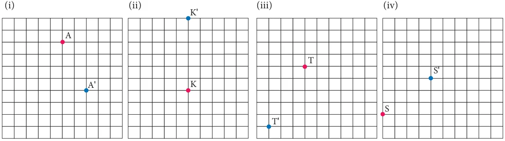</figure>
<ul class="qlist">
<li><span class="mk">2.</span><span class="lt">\(3 \to\) ,4↑ 3←, 3↑ (iii) 4←, 4↓ \(2 \to\) ,2↓</span></li>
</ul>
<p>3.</p>
<figure class="fig wide">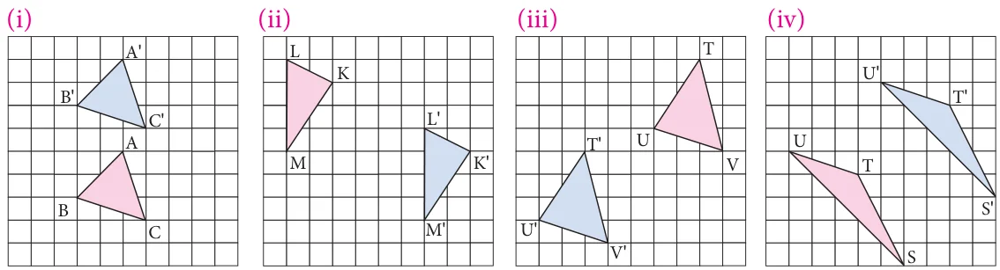</figure>
<p>4.</p>
<figure class="fig wide">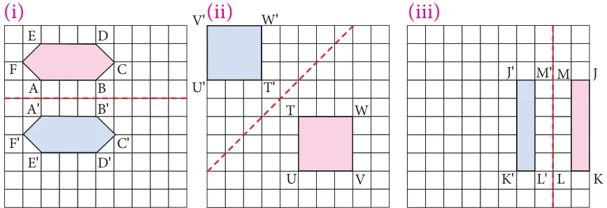</figure>
<aside class="sidenote"><p>' '</p></aside>
<figure class="fig wide">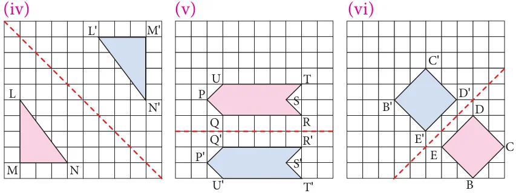</figure>
<aside class="sidenote"><p>' '</p></aside>
<p>5.</p>
<figure class="fig">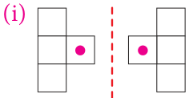</figure>
<figure class="fig">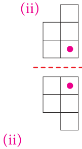</figure>
<figure class="fig">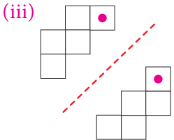</figure>
<ul class="qlist">
<li><span class="mk">6.</span><span class="lt">(i) (iii)</span></li>
</ul>
<figure class="fig">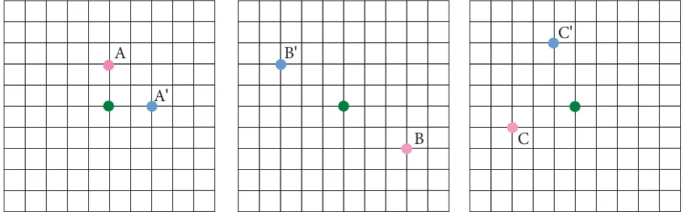</figure>
<figure class="fig">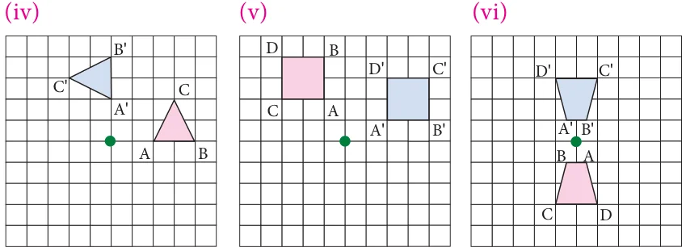</figure>
<ul class="qlist">
<li><span class="mk">7.</span><span class="lt">Reflection</span></li>
<li><span class="mk">8.</span><span class="lt">Rotation</span></li>
<li><span class="mk">9.</span><span class="lt">Translation</span></li>
<li><span class="mk">10.</span><span class="lt">a. \(7 \to\) ,2↓</span></li>
<li><span class="mk">b.</span><span class="lt">No. It will be landed on the island.</span></li>
<li><span class="mk">c.</span><span class="lt">\(5 \to\) ,3↓</span></li>
<li><span class="mk">11.</span><span class="lt">(i) Translation (ii) Reflection about horizontal line</span></li>
</ul>
<p>Image of \(\angle N\) is \(\angle\) N’, Image of \(\angle O\) is \(\angle\) O’ Image of vertex L is L’, Image of vertex M is \(\angle \angle \angle \angle\) M’ Image of vertex N is N’, Image of vertex O is O’ \(\angle\)</p>
<ul class="qlist">
<li><span class="mk">(iii)</span><span class="lt">Reflection about vertical line (iv) Rotation about the heel</span></li>
<li><span class="mk">12.</span><span class="lt">(i) Image of L is L’, Image of M is M’,</span></li>
<li><span class="mk">(ii)</span><span class="lt">Corresponding sides are LM and L’M’, MN and M’N’, NO and N’O’ \(\angle\)</span></li>
</ul>
<p>and OL and O’L’</p>
<ul class="qlist">
<li><span class="mk">13.</span><span class="lt">\(3 \to\) 1↓</span></li>
</ul>
<p>Objective type questions.</p>
<ul class="qlist">
<li><span class="mk">14.</span><span class="lt">(ii) Rotation 15. (iii) Reflection 16. (i) Translation</span></li>
<li><span class="mk">17.</span><span class="lt">(ii) Rotation 18.(i) Translation 19.</span></li>
</ul>
<figure class="fig">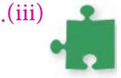</figure>
<h4 class="callout-h" id="s-exercise-4-3">Exercise 4.3</h4>
<h4 class="callout-h" id="s-miscellaneous-problems">Miscellaneous Problems</h4>
<ul class="qlist">
<li><span class="mk">1.</span><span class="lt">For first move: \(2 \to\) ,2↓; For second move: 5←,5↓</span></li>
<li><span class="mk">2.</span><span class="lt">Pawn - 1↑ or 2↑</span></li>
</ul>
<p>Rook \(- 1\) to 8 ↑ Knight \(- 2 \to\) ,1↑ or 2←,1↑ \(or1 \to\) ,2↑ or 1←,2↑ Bishop - 1 \(\to\) ,1↑ or \(2 \to\) ,2↑or \(3 \to\) ,3↑or \(4 \to\) ,4↑or \(5 \to\) 5↑1←,1↑ or 2←,2↑ or 3←,3↑ or 4←,4↑ or 5←5↑</p>
<p>Queen - 1 to 8 ↑, \(1 \to\) , 1↑ or \(2 \to\) ,2↑ or \(3 \to\) ,3↑ or \(4 \to\) ,4↑ or \(5 \to\) ,5↑ or 1←,1↑ or 2←,2↑ or 3←,3↑ or 4←,4↑ or 5←5↑</p>
<p>King \(- 1 \to\) or ← or ↑</p>
<ul class="qlist">
<li><span class="mk">3.</span><span class="lt">(i) More brains category shows translation</span></li>
<li><span class="mk">(ii)</span><span class="lt">More brains category shows reflection</span></li>
<li><span class="mk">4.</span><span class="lt">(i) \(120cm \to\) ,210cm↓ (ii) 270cm←,330cm↑ (iii) \(150cm \to\)</span></li>
<li><span class="mk">5.</span><span class="lt">(i) rotation (ii) reflection (iii) translation (iv) reflection</span></li>
<li><span class="mk">(v)</span><span class="lt">rotation (vi) reflection (vii) rotation. (viii) translation</span></li>
</ul>
<p>challenge Problems</p>
<ul class="qlist">
<li><span class="mk">6.</span><span class="lt">2←,1↓ and then 1←, 2↓ (or) 2←, 1↓ and then 1←,2↓</span></li>
<li><span class="mk">7.</span><span class="lt">(i) Translation 3←,5↑ and \(90 ^{\circ}\) counter clockwise rotation about the green point and</span></li>
</ul>
<p>translates 5 ←, 2↓</p>
<ul class="qlist">
<li><span class="mk">(ii)</span><span class="lt">Translation 2←90 \(^{\circ}\) counter clockwise rotation about the green point and translates</span></li>
</ul>
<p>2 ←, 2↓ 8.</p>
<figure class="fig wide">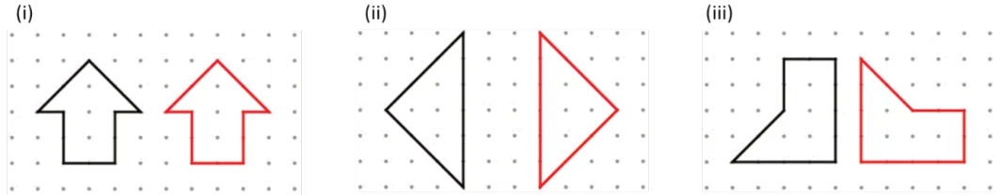</figure>
<ul class="qlist">
<li><span class="mk">5.</span><span class="lt">Statistics</span></li>
</ul>
<h4 class="callout-h" id="s-exercise-5-1">Exercise 5.1</h4>
<ul class="qlist">
<li><span class="mk">1.</span><span class="lt">(i) 5.5 (ii) 3,525 (iii) 6 (iv) 0</span></li>
<li><span class="mk">2.</span><span class="lt">13 3. (i) 35 (ii) 47 (iii) 10</span></li>
<li><span class="mk">4.</span><span class="lt">Y=152 ; Height of two students are 152 cm and 156 cm</span></li>
<li><span class="mk">5.</span><span class="lt">240 6. 5 7. 24</span></li>
</ul>
<p>Objective type questions:</p>
<ul class="qlist">
<li><span class="mk">8.</span><span class="lt">(i) Mean 9. (ii) 16 10. (i) 16 11. (iii) 14</span></li>
</ul>
<h4 class="callout-h" id="s-exercise-5-2">Exercise 5.2</h4>
<ul class="qlist">
<li><span class="mk">1.</span><span class="lt">2 2. 31 3. 25 and 36 4. 15</span></li>
</ul>
<p>Objective type questions:</p>
<ul class="qlist">
<li><span class="mk">5.</span><span class="lt">(i) blue 6. (iv) No mode 7. (iii) 2 and 1</span></li>
</ul>
<h4 class="callout-h" id="s-exercise-5-3">Exercise 5.3</h4>
<ul class="qlist">
<li><span class="mk">1.</span><span class="lt">(i) 25 (ii). 11</span></li>
<li><span class="mk">2.</span><span class="lt">34 3. 7 4. 37.5 ; 36</span></li>
</ul>
<p>Objective type questions:</p>
<ul class="qlist">
<li><span class="mk">5.</span><span class="lt">(iii) 2 6. (iv) 32 7. (i) 6</span></li>
</ul>
<h4 class="callout-h" id="s-exercise-5-4">Exercise 5.4</h4>
<ul class="qlist">
<li><span class="mk">1.</span><span class="lt">82 2. 15.5 3. 2, 3 and 5 4. 13;13</span></li>
<li><span class="mk">5.</span><span class="lt">2;3 6. 8; No mode.</span></li>
</ul>
<aside class="sidenote"><p>Challenge Problems</p></aside>
<ul class="qlist">
<li><span class="mk">7.</span><span class="lt">8 8. 17; 10 ; 18 9. \(- 0.5 10\). 12.9 ; 11.2</span></li>
<li><span class="mk">6.</span><span class="lt">Information Processing</span></li>
</ul>
<h4 class="callout-h" id="s-exercise-6-1">Exercise 6.1</h4>
<ul class="qlist">
<li><span class="mk">1.</span><span class="lt">(i) (e) (ii) (c) (iii) (a) (iv) (b) (v) (d)</span></li>
<li><span class="mk">2.</span><span class="lt">Start 3. Start</span></li>
</ul>
<p>Insert a ATM card Login your web browser</p>
<p>Select your language Select prepaid or postpaid</p>
<p>Select Withdraw money</p>
<p>Enter mobile number Select Savings</p>
<p>Select your plan Enter Pin number</p>
<p>Enter the amount Enter the amount</p>
<p>Proceed to recharge Enter the amount</p>
<aside class="sidenote"><p>End</p></aside>
<p>Collect your cash</p>
<p>End</p>
<ul class="qlist">
<li><span class="mk">4.</span><span class="lt">Flowchart 5.</span></li>
</ul>
<figure class="fig">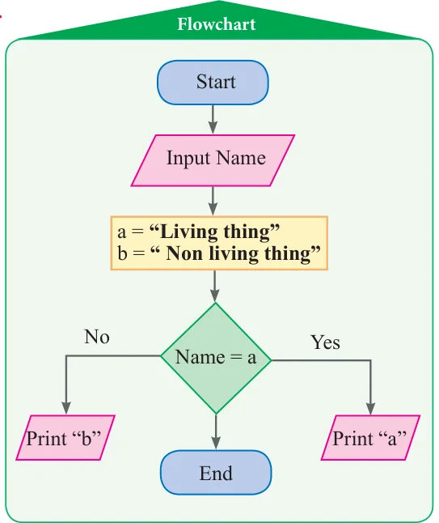</figure>
<p>Start</p>
<p>Input Signal</p>
<p>Signal \(= ^{No}\) Signal \(= _{No}\) red yellow</p>
<p>Yes Yes</p>
<p>Print Print Print</p>
<p>“Stop” “Wait” “Go”</p>
<p>End</p>
<ul class="qlist">
<li><span class="mk">6.</span><span class="lt">(i) Flowchart</span></li>
</ul>
<p>Start</p>
<p>Input T, E, M, S, SS</p>
<div class="mathblock"><p>Average = (T \(+ E + M + S +\) SS) \(/ 5\)</p></div>
<p>Print “Average”</p>
<p>End</p>
<figure class="fig">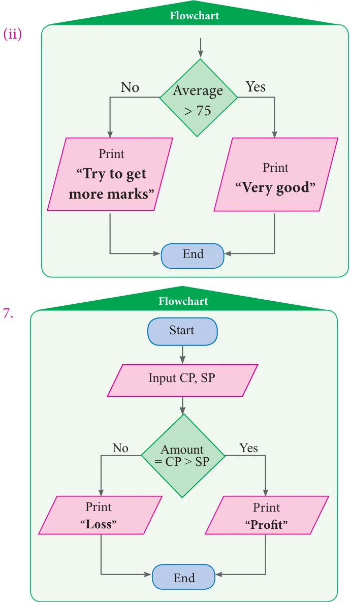</figure>
<p>7.</p>
<figure class="fig table-fig wide">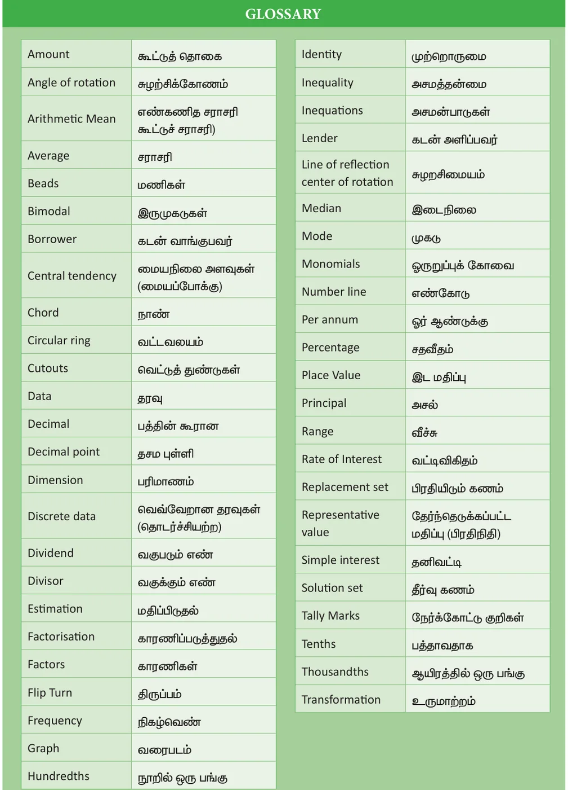</figure>
<p>Upper Primary Mathematics - Class 7, Term-III Text Book Development Team</p>
<p>Reviewer Academic Advisor</p>
<ul class="qlist">
<li><span class="mk">•</span><span class="lt">Dr. R. Ramanujam, • Dr. Pon.Kumar,</span></li>
</ul>
<p>Professor, Joint Director (Syllabus), Institute of Mathematical Sciences, Taramani, Chennai. SCERT, Chennai.</p>
<p>Domain Expert Coordinator</p>
<ul class="qlist">
<li><span class="mk">•</span><span class="lt">Dr. C. Annal Deva Priyadarshini, • D. Joshua Edison</span></li>
</ul>
<p>Asst. Professor, Department of Mathematics, Lecturer, Madras Christian College, DIET, Kaliyampoondi, Chennai Kanchipuram Dt.</p>
<p>Content Writers ICT Coordinator</p>
<ul class="qlist">
<li><span class="mk">•</span><span class="lt">M.K. Lalitha • D. Vasuraj</span></li>
</ul>
<p>B.T. Asst, GGHSS, PGT &amp; HOD (Maths), Katpadi, Vellore District KRM Public School, Chennai</p>
<ul class="qlist">
<li><span class="mk">•</span><span class="lt">G.P. Senthilkumar,</span></li>
</ul>
<p>B.T.Asst, Art and Design Team</p>
<p>GHS, Eraivankadu, Vellore District.</p>
<aside class="sidenote"><p>Layout Artist</p></aside>
<ul class="qlist">
<li><span class="mk">•</span><span class="lt">M.J. Shanthi,</span></li>
</ul>
<p>B.T.Asst, PUMS, • Jerald Wilson Kannankurichi, Salem Dt.</p>
<ul class="qlist">
<li><span class="mk">•</span><span class="lt">M. Palaniyappan, Artist</span></li>
</ul>
<p>B.T.Asst, • Prabu Raj D.T.M.</p>
<p>Sathappa GHSS, Nerkuppai, Drawing Teacher, GHS, Manimangalam Sivagangai Dt. Kanchipuram Dt.</p>
<ul class="qlist">
<li><span class="mk">•</span><span class="lt">A.K.T. Santhamoorthy Inhouse Qc</span></li>
</ul>
<p>B.T.Asst,</p>
<p>GHSS, Kolakkudi, • Rajesh Thangappan</p>
<p>Tiruvannamalai Dt.</p>
<ul class="qlist">
<li><span class="mk">•</span><span class="lt">Mathan Raj • Adison raj</span></li>
<li><span class="mk">•</span><span class="lt">P. Malarvizhi</span></li>
</ul>
<p>B.T.Asst, Chennai High School, Coordinator Strahans Road, Pattalam, Chennai.</p>
<ul class="qlist">
<li><span class="mk">•</span><span class="lt">Ramesh munusamy</span></li>
<li><span class="mk">•</span><span class="lt">A.Ravi</span></li>
</ul>
<p>B.T.Asst (Maths), Govt High school, Typist Ayilam, Vellore district.</p>
<ul class="qlist">
<li><span class="mk">•</span><span class="lt">A. Palanivel</span></li>
</ul>
<p>Content Reader SCERT, Chennai.</p>
<ul class="qlist">
<li><span class="mk">•</span><span class="lt">Dr. M.P. Jeyaraman, • M. Sathya</span></li>
</ul>
<p>Asst Professor, L.N. Govt Arts College, Perungalathur, Chennai Ponneri \(- 601 204\).</p>
<p>EMIS Technology Team</p>
<ul class="qlist">
<li><span class="mk">•</span><span class="lt">R.M. Satheesh</span></li>
</ul>
<p>State Coordinator Technical, TN EMIS, Samagra Shiksha.</p>
<ul class="qlist">
<li><span class="mk">•</span><span class="lt">K.P. Sathya Narayana Elegant Maplitho paper</span></li>
</ul>
<aside class="sidenote"><p>This book has been printed on 80 GSM</p></aside>
<p>IT Consultant, TN EMIS, Samagra Shiksha Printed by offset at :</p>
<ul class="qlist">
<li><span class="mk">•</span><span class="lt">R. Arun Maruthi Selvan</span></li>
</ul>
<p>Technical Project Consultant, TN EMIS, Samagra Shiksha</p>
<h2 class="callout-h" id="s-notes">NOTES</h2>
</article>
<nav class="pager"><a class="" data-nav="prev" href="../../06-information-processing/03-exercise-6.1/index.html"><span class="dir">← Previous</span><span class="t">Exercise 6.1</span><span class="ch">Information Processing</span></a><span></span></nav>
</main><footer class="site">Generated from the source textbook PDFs · text, figures and exercises belong to their respective publishers.</footer><script defer src="https://cdn.jsdelivr.net/npm/katex@0.16.11/dist/katex.min.js" crossorigin="anonymous"></script>
<script defer src="https://cdn.jsdelivr.net/npm/katex@0.16.11/dist/contrib/auto-render.min.js" crossorigin="anonymous"
  onload="renderMathInElement(document.body,{delimiters:[
    {left:'\\(',right:'\\)',display:false},
    {left:'$$',right:'$$',display:true},
    {left:'\\[',right:'\\]',display:true}],throwOnError:false,ignoredTags:['script','noscript','style','textarea','pre','code']})"></script>
<script src="../../../assets/book.js"></script>
</body>
</html>
